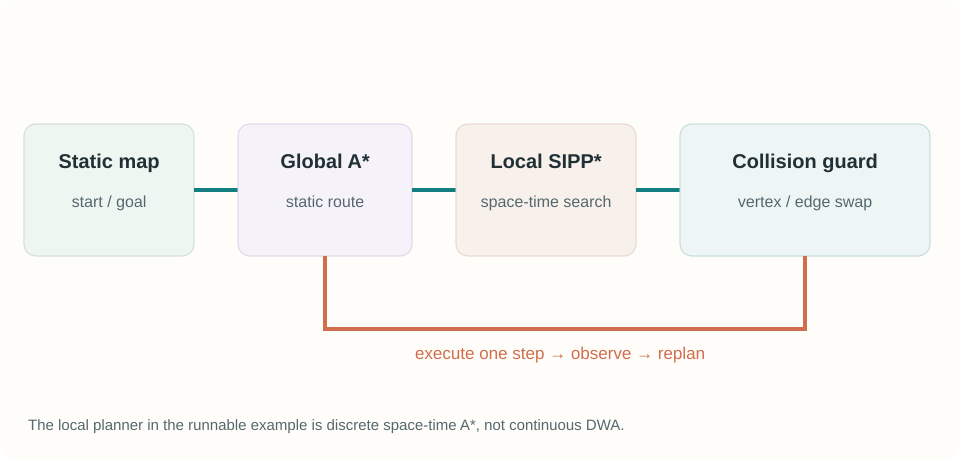
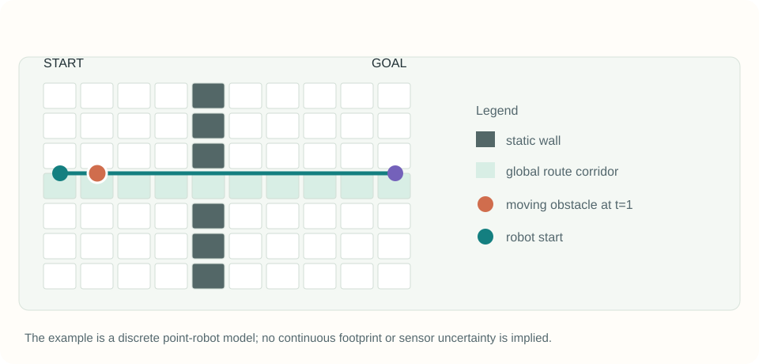
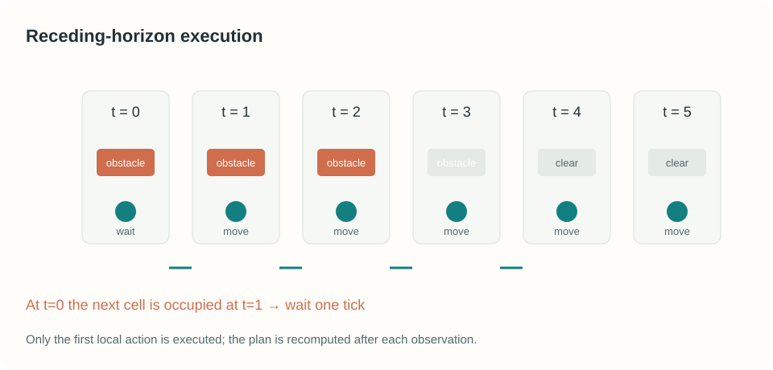
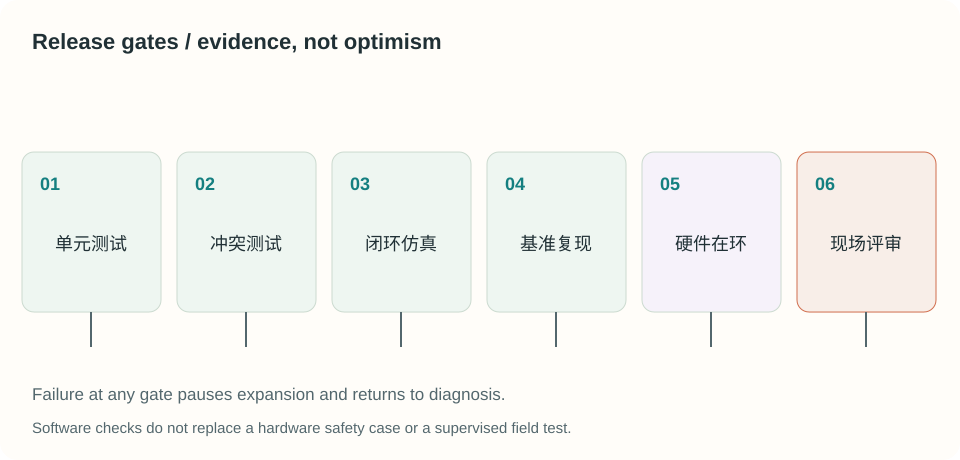

综合项目：把一条静态路径变成可验证的导航闭环
从静态 A*、时空局部规划和动态障碍预测出发，构建一个能等待、能重规划、能记录失败的最小导航系统，再明确它升级到 ROS 2 与真实机器人还缺少哪些条件。
一条全局路径为什么还不是完整的导航系统？
全局规划器通常在已知地图上输出一串空间位置。真实机器人却必须在某个时刻、以某个速度和姿态到达这些位置；障碍物可能移动，传感器可能延迟，控制器也可能无法精确跟踪折线。把 A* 的输出直接当作电机命令，会把“几何路径存在”误当成“机器人能够安全执行”。
一个完整项目应把任务拆成：地图与状态输入、全局路线、局部时空决策、碰撞与约束验证、执行反馈、失败恢复和实验记录。每一层都要定义清楚输入输出以及失败时的行为。
INTEGRATED NAVIGATION PROJECT / 28

先定义一个能被完整验证的最小项目
本项目采用一个明确的教学模型：二维 10×7 栅格、四邻域单位步长、点机器人、静态墙体以及一个按离散时间移动的动态障碍物。全局 A* 只考虑静态墙体；局部规划在有限时间窗内搜索空间—时间状态，并允许等待。每一轮只执行局部计划的第一步，下一轮根据新的时间索引重新计算。
这个范围刻意不假装成真实连续机器人：它没有角速度、加速度、机器人多边形足迹、传感器噪声或不确定运动预测。要升级为实体底盘，必须加入足迹膨胀/扫掠碰撞、运动学、制动距离、TF 和真实时钟检查。项目先把离散模型做正确，再逐层增加复杂性。
| 对象 | 本项目定义 | 扩展到实车时还缺什么 |
|---|---|---|
| 地图 | 边界内的整数格点；静态墙体集合 | 地图分辨率、原点、未知区、代价层 |
| 机器人 | 占据一个格点的点模型 | 多边形 footprint、姿态和扫掠体 |
| 动态障碍 | 已知的离散时间位置表 | 感知、速度估计、预测不确定性 |
| 动作 | 四方向移动或等待一个 tick | 速度/加速度、控制周期和制动 |
| 安全检查 | 顶点占用与反向边交换 | 连续时间碰撞和安全认证 |
模块一：全局 A* 在静态地图上建立路线
状态是格点 ，每条四邻域边的代价为 1。启发式使用曼哈顿距离：
因为每一步只能水平或垂直移动，曼哈顿距离不会高估剩余步数。A* 的优先级是 f = g + h。静态规划结果穿过墙体以外的格点；动态障碍不直接写入静态墙体，否则路线会在每个时刻变化时反复丢失整体结构。
INTEGRATED NAVIGATION PROJECT / 28

模块二：局部规划把时间加入状态
动态障碍让“同一格子”在不同时间具有不同含义。局部搜索状态扩展为 ，动作集合包括四方向移动和等待。每个候选动作都要检查下一时刻的障碍位置。只检查两个机器人是否在同一时刻占据同一格还不够；还要拒绝两个运动体在一个 tick 内沿同一条边反向交换位置。
局部规划只看有限时间窗，找到前方一个局部子目标后返回一条短时计划。控制循环只执行第一步，再读取新的时刻和障碍预测重新规划。这是滚动时域的离散教学模型，不是连续速度空间的 DWA，也不保证在任意动态环境中都有解。
INTEGRATED NAVIGATION PROJECT / 28

把全局、局部与碰撞检查串成一个闭环
全局 A* 先给出静态路线。局部规划器沿该路线向前选择三个格点作为短时目标，在时间扩展图中搜索未来六个 tick。搜索得到完整短计划后，系统只执行第一个格点移动；若局部规划无解，系统先检查当前状态与等待动作是否安全：安全时等待一个 tick 并记录回退；若等待也会造成冲突，则停止本次仿真并报告失败，不把“原地不动”误当成必然安全。示例中动态障碍先进入唯一通道，机器人等待一个 tick，随后安全通过。
注意示例中的动态障碍轨迹是已知的确定性时间表。真实机器人需要从传感器估计障碍状态，并把预测误差纳入安全距离或概率约束。若预测只给出一个点估计，代码通过也不意味着现实安全。
from heapq import heappush, heappop
from itertools import count
WIDTH, HEIGHT = 10, 7
START, GOAL = (0,3), (9,3)
STATIC_WALLS = {(4,y) for y in range(HEIGHT) if y != 3}
DYNAMIC = {1:(1,3), 2:(2,3), 3:(3,3), 4:(3,2), 5:(3,1)}
MOVES = ((1,0),(-1,0),(0,1),(0,-1),(0,0)) # Last action is wait.
def collision_free_transition(state, nxt, obstacle_now, obstacle_next):
# Reject an existing overlap, a next-tick vertex conflict, and an edge swap.
if state == obstacle_now or nxt == obstacle_next:
return False
return not (state == obstacle_next and nxt == obstacle_now)
def transition_is_safe(state, nxt, now):
return collision_free_transition(
state, nxt, DYNAMIC.get(now), DYNAMIC.get(now+1))
# Regression tests: waiting into an occupied cell and opposite-edge swaps are unsafe.
assert not collision_free_transition((0,0),(0,0),None,(0,0))
assert not collision_free_transition((0,0),(1,0),(1,0),(0,0))
assert not collision_free_transition((0,0),(1,0),(0,0),None)
def inside(cell):
x,y = cell
return 0 <= x < WIDTH and 0 <= y < HEIGHT
def manhattan(a,b):
return abs(a[0]-b[0]) + abs(a[1]-b[1])
def global_astar(start, goal):
if (not inside(start) or not inside(goal) or
start in STATIC_WALLS or goal in STATIC_WALLS):
return None
serial = count()
frontier = [(manhattan(start,goal),0,next(serial),start)]
best, parent = {start:0}, {start:None}
while frontier:
_,cost,_,state = heappop(frontier)
if cost != best[state]:
continue
if state == goal:
path=[]
while state is not None:
path.append(state)
state=parent[state]
return path[::-1]
for dx,dy in MOVES[:4]:
nxt=(state[0]+dx,state[1]+dy)
if not inside(nxt) or nxt in STATIC_WALLS:
continue
new_cost=cost+1
if new_cost < best.get(nxt,float("inf")):
best[nxt]=new_cost
parent[nxt]=state
heappush(frontier,(new_cost+manhattan(nxt,goal),
new_cost,next(serial),nxt))
return None
def space_time_local_plan(start, target, now, horizon=6):
if (not inside(start) or start in STATIC_WALLS or
start == DYNAMIC.get(now) or not inside(target) or
target in STATIC_WALLS):
return None
serial=count()
frontier=[(manhattan(start,target),0,next(serial),start,0)]
best={(start,0):0}
parent={(start,0):None}
while frontier:
_,cost,_,state,dt=heappop(frontier)
key=(state,dt)
if cost != best[key]:
continue
if state == target:
route=[]
while key is not None:
route.append(key[0])
key=parent[key]
return route[::-1]
if dt == horizon:
continue
obstacle_now=DYNAMIC.get(now+dt)
obstacle_next=DYNAMIC.get(now+dt+1)
for dx,dy in MOVES:
nxt=(state[0]+dx,state[1]+dy)
if not inside(nxt) or nxt in STATIC_WALLS:
continue
if not collision_free_transition(state,nxt,obstacle_now,obstacle_next):
continue
next_key=(nxt,dt+1)
new_cost=cost+1
if new_cost < best.get(next_key,float("inf")):
best[next_key]=new_cost
parent[next_key]=key
priority=new_cost+manhattan(nxt,target)
heappush(frontier,(priority,new_cost,next(serial),nxt,dt+1))
return None
global_path=global_astar(START,GOAL)
assert global_path is not None and global_path[0]==START and global_path[-1]==GOAL
assert all(p not in STATIC_WALLS for p in global_path)
position=START
trace=[position]
time=0
waits=0
fallback_waits=0
replans=0
waypoint_index=0
while position != GOAL and time < 40:
local_goal_index=min(waypoint_index+3,len(global_path)-1)
local_goal=global_path[local_goal_index]
if position == local_goal:
waypoint_index=local_goal_index
continue # Advance the global waypoint without consuming a time tick.
local_plan=space_time_local_plan(position,local_goal,time,horizon=6)
replans += 1
if local_plan is None:
# Waiting is only a fallback when the current cell remains safe next tick.
if not transition_is_safe(position,position,time):
raise RuntimeError(
f"No local path and waiting is unsafe at t={time}; stop and request intervention")
next_position=position
fallback_waits += 1
else:
next_position=local_plan[1] if len(local_plan)>1 else position
if not transition_is_safe(position,next_position,time):
raise RuntimeError(f"Unsafe transition rejected at t={time}")
if next_position == position:
waits += 1
position=next_position
time += 1
assert position != DYNAMIC.get(time)
trace.append(position)
if position == local_goal:
waypoint_index=local_goal_index
assert position == GOAL
assert waits == 1
assert all(p not in STATIC_WALLS for p in trace)
print("global A* edges:",len(global_path)-1)
print("executed steps:",len(trace)-1,"waits:",waits,"fallback waits:",fallback_waits,
"local replans:",replans)
print("collision guards: unsafe wait, current overlap and edge swap rejected")
print("goal reached:",trace[-1],"static and predicted dynamic checks passed")固定样例输出：全局路线 9 条边，实际执行 10 个 tick，其中 1 次等待，局部重规划 10 次。这里的步数只用于核对这个教学场景，不是不同规划器的性能基准。
测试矩阵：从函数断言到整套系统验收
- 地图单测：起点、终点和静态墙体边界合法；A* 返回的相邻格点距离为 1。
- 路径单测：每个输出格点不在静态墙体中；无路时明确返回失败。
- 动态冲突单测：测试顶点冲突和反向边交换；等待动作不会误判为穿越障碍。
- 闭环集成测试：每轮只执行第一步；障碍时间变化后重新求解；达到目标或超时都要终止。
- 回归与基准：固定地图、种子、障碍预测、时间预算，完整记录成功、失败、等待、重规划和路径代价。
- 安全验收：真实系统还要验证足迹、制动、传感器时效、TF、命令限幅、硬件急停和故障注入。
INTEGRATED NAVIGATION PROJECT / 28

从教学栅格项目映射到 ROS 2 / Nav2
把离散原型升级到 ROS 2 时，模块边界可以映射到 Nav2 的全局规划器、控制器、costmap、行为树导航器和 Collision Monitor。全局规划器插件生成全局路线，控制器在当前局部地图和机器人状态下产生速度命令；行为树协调导航任务和恢复行为；Collision Monitor 可以在规划和 costmap 之外对传感器输入执行附加碰撞监测。
真实系统还需要按 REP-105 对齐 map → odom → base_link 的坐标语义，处理 TF 时间戳、传感器延迟、footprint 和速度上限。软件碰撞监测不能替代按风险评估设计的硬件急停或功能安全链。
交互：选择系统测试阶段
系统从离线栅格仿真走向动态环境和实车时，验收内容会逐级增加。切换阶段查看最少需要保存的证据。
离线单测：验证A*路径、边界、障碍检查、时空状态、等待动作和顶点/边交换断言。
此选择器是测试清单，不会控制机器人或批准实车上线。
进阶扩展：不要把离散示例冒充连续导航
- 加入机器人足迹：先把障碍按机器人半径/多边形足迹膨胀，或对完整扫掠体做碰撞检测。
- 加入运动学：用差速或 Ackermann 模型代替格点瞬移；控制候选需满足速度、角速度、加速度和制动约束。
- 改成 DWA / MPC：在连续速度或控制序列空间采样，模拟预测轨迹并检查每个时刻的碰撞；安全集合要基于可制动性。
- 加入不确定障碍预测：使用预测分布、占据概率或保守包络，而不是把未来位置当成精确点。
- 加入基准工具：导出每次任务的地图哈希、参数、种子、成功/失败、时延和路径质量，保持比较条件一致。
路径平滑也不能只看曲线是否漂亮。任何 shortcut、样条或梯度平滑都必须重新验证整条线段或轨迹的碰撞、曲率、足迹和速度约束。